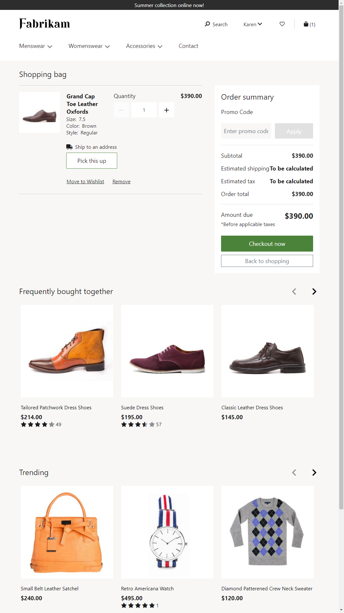
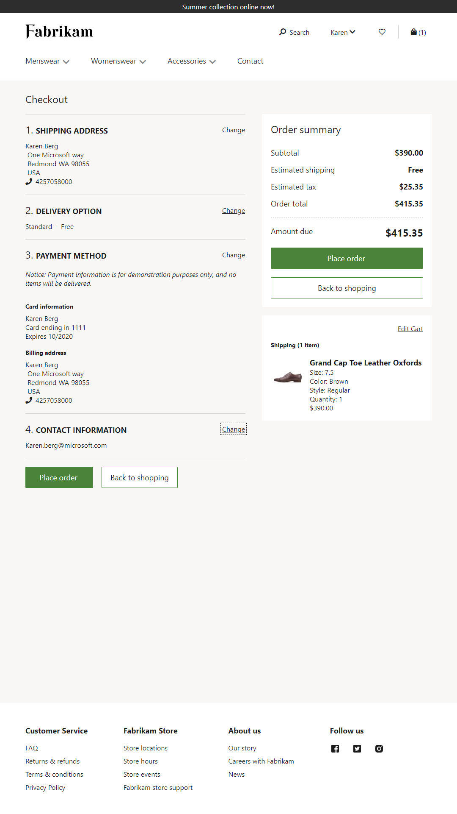

Cart and checkout pages overview
This topic provides an overview of the cart and checkout pages in Microsoft Dynamics 365 Commerce.
Overview
The cart page of an e-Commerce website shows all items that a customer has added to the cart. The cart page is built by using the cart module. The cart module is a container that hosts all the modules that are required to showcase items in the cart. The cart module can also use other modules to show the order summary and any promotional codes that have been applied to the customer order.
The checkout page of an e-Commerce website presents a step-by-step flow that customers follow to enter all the information that is required to place an order. A checkout module can include modules that handle the shipping address, shipping methods, billing information, order summary, and other information that is related to customer orders.
Cart page
The cart page serves as the shopping bag and includes all the items that have been added to the cart.
The following illustration show an example of a cart page that was built by using the module library and the "Fabrikam" theme.

The main body of the cart page shows all the items that the customer has added to the cart. All applicable discounts are showcased. These discounts include complex discounts. Examples include "Buy 3 items and get 10% off" or "Buy a bottle and a backpack to get 10% off." The order summary module shows the amount that is due after discounts, shipping, taxes, and so on, have been applied. There is also a promo code module that lets the customer apply or remove promotional codes.
A customer can shop anonymously or as a signed-in user. If a customer is signed in, items in the cart are preserved between sessions. In this way, the customer can continue to shop from multiple devices.
From the cart, the customer can proceed to checkout. A customer can initiate checkout as a guest user or as a signed-in user.
For information about how to author a cart page, see Add a cart module to a page.
Checkout page
The checkout page is where customers enter the information that is required to place an order.
The following illustration show an example of a checkout page that was built by using the module library.

The main body of the checkout page is where all the order information is collected. This information includes the shipping address, delivery options, and payment information. Checkout has a step-by-step flow, because the information must be entered in a specific order to be processed. For example, the shipping address must be entered before the shipping costs can be calculated and the payment can be authorized.
Shipping address
A shipping address is required if items must be shipped. The format of shipping addresses for each locale can be configured in Dynamics 365 Commerce. For example, if the items will be shipped to the United States, the shipping address must include a street address, state, and ZIP Code. Some basic input validation is done for shipping address fields, such as validation for alphanumeric characters, maximum length, and numbers. Although the validity of the address itself isn't verified, this verification can be done by using customized third-party services.
The shipping address is applied to all items in the cart that the "ship" option is selected for. If you use the checkout flow that is provided in the module library, individual cart items can't be shipped to different addresses. If you require this capability, it can be implemented through customization of the checkout modules.
After the shipping address is provided, the shipping methods that are available from the Dynamics 365 Commerce online store are shown. The shipping methods and the addresses that they support can be configured in Commerce.
Payment
The next step in the checkout flow is payment. In e-Commerce, multiple methods of payment can be used to place orders, such as credit cards, gift cards, and loyalty points. A combination of these payment methods can also be used. Depending on the payment methods that are used, additional information might be required. For example, a credit card payment requires a billing address. Credit card payments are processed by using the Adyen Payment Connector.
Loyalty points
During the checkout flow, a customer who is a member of a loyalty program and who has accrued loyalty points can redeem those loyalty points for an order. The loyalty points module is shown only if the customer has an existing loyalty membership. For non-members and guest users, this module is hidden.
Gift cards
The module library lets internal gift cards be redeemed for an order. To apply an internal gift card, the customer must be signed in. For additional security, we recommend that you customize the flow by using a personal identification number (PIN) for internal gift cards.
Signed-in and guest users
The customer can complete the checkout process as a guest user or a signed-in user. If the customer signs in, account information such as saved shipping addresses and saved credit card details is automatically retrieved.
Order summary
Checkout shows a summary of the line items in the cart, so that the customer can verify the order before he or she places it. The line items can't be edited during the checkout flow. However, a link to the cart is provided in case the user wants to go back and edit line items.
After the customer provides shipping and billing information, the order summary reflects the amount that is due after loyalty points, gift cards, and other payments have been applied.
Order confirmation and email
When the customer places an order, a confirmation number is provided. At this point, the payment has been authorized but not charged. The payment will be charged only when the order is fulfilled (that is, when it's either shipped or picked up).
After an order is created, an order confirmation email is sent to the customer.
For more information about how to author a checkout page, see Add a checkout module to a page.